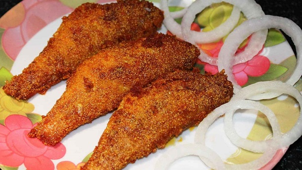

Sea-Food-Recipes

Description
Fish Fried Recipe in English is an easy and traditional cooking recipe to prepare at home. It provides you an awesome taste of Sea Food Recipes.
Ingredients
- Fish
- 2 Onions
- 1 Tomato and garlic chopped
- Cilantro
- Salt according to you taste
- 1 Tea spoon grind red chilly
- Dry coriander grind
- 1/2 Tea spoon turmeric
Steps To Make Fish Fried
- Pat the fish fillets dry with a paper towel.
- In a big bowl, mix together all the batter ingredients with a whisk. Make a smooth, thick batter with water.
- To the bowl add the fish and coat it well with the batter. Keep aside for 15 minutes. Don't leave the fish for too long or it will get way too soft.
- Heat oil for deep frying in a big pot. On medium heat, drop the fish fingers in batches. Don't overcrowd. Flip over so that they are equally golden on both sides. When they are half-way cooked and the coating has stuck to the fish, remove to a paper towel.
- Let cool for 15-20 mins while you fry the remaining batch.
- Then re-fry the fish fillets for extra crispiness till they are cooked through and are golden brown.
- Sprinkle chaat masala as soon as they are out and enjoy them with your favourite chutney.